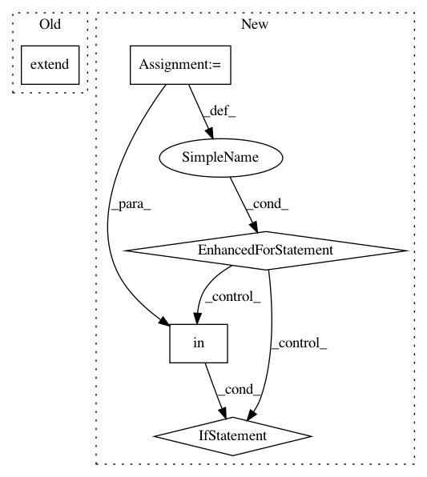

b9dc15ecef0393a55a953acff3c1d0278b19d9f5,src/fonduer/utils/utils_udf.py,,get_sparse_matrix,#Any#Any#Any#Any#,31
Before Change
if values:
cand_keys = values[0].keys
cand_values = values[0].values
indices.extend([keys.index(key) for key in cand_keys if key in keys])
data.extend(
[cand_values[i[0]] for i in enumerate(cand_keys) if i[1] in keys]
)
After Change
for cand in cand_list:
values = _get_cand_values(cand, key_table)
if values:
for cand_key, cand_value in zip(values[0].keys, values[0].values):
if cand_key in keys_map:
indices.append(keys_map[cand_key])
data.append(cand_value)
indptr.append(len(indices))
result.append(
csr_matrix((data, indices, indptr), shape=(len(cand_list), len(keys_map)))
In pattern: SUPERPATTERN
Frequency: 4
Non-data size: 5
Instances
Project Name: HazyResearch/fonduer
Commit Name: b9dc15ecef0393a55a953acff3c1d0278b19d9f5
Time: 2018-09-01
Author: lwhsiao@stanford.edu
File Name: src/fonduer/utils/utils_udf.py
Class Name:
Method Name: get_sparse_matrix
Project Name: pantsbuild/pants
Commit Name: 795b7596c48fa5483983c3f30766cb1e959fd711
Time: 2015-03-04
Author: john.sirois@gmail.com
File Name: src/python/pants/goal/context.py
Class Name: Context
Method Name: targets
Project Name: reinforceio/tensorforce
Commit Name: 2c7d7120ab89fb7e69725ebc3c5eca3891b6fecb
Time: 2019-11-29
Author: alexkuhnle@t-online.de
File Name: tensorforce/core/optimizers/tf_optimizer.py
Class Name: TFOptimizer
Method Name: get_variables
Project Name: pytorch/pytorch
Commit Name: 249c21346208b682d128e28fe4480262f8b76cd8
Time: 2021-02-27
Author: benjamin.lefaudeux@gmail.com
File Name: torch/distributed/optim/zero_redundancy_optimizer.py
Class Name: ZeroRedundancyOptimizer
Method Name: state_dict